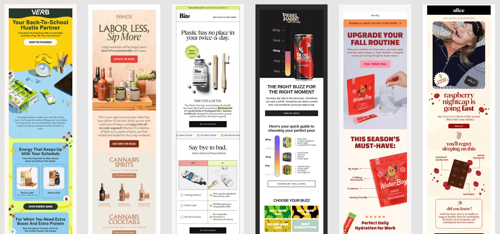
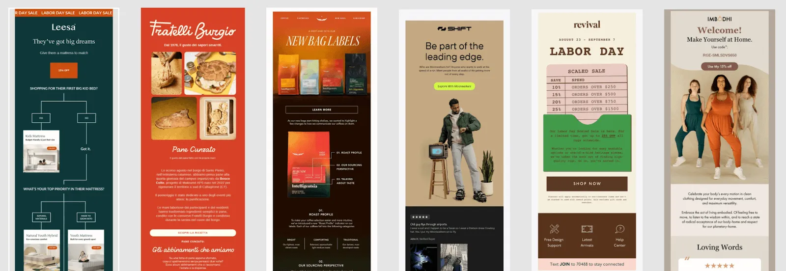
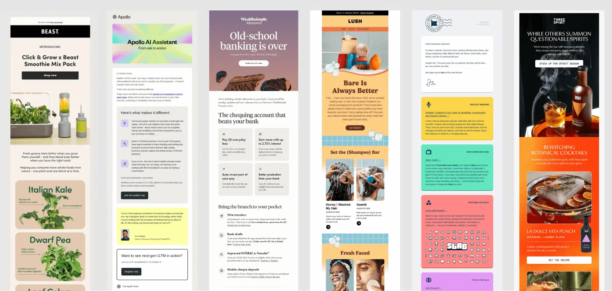

While inboxes are about to turn into a Black Friday mosh pit, October 2025’s best email designs were weirdly composed—like brands doing tai chi while everyone else power-washes their audience with exclamation points. No urgency. No countdown timers. Just quietly flexing that they know something we don’t.
And if we look back at September 2025’s most-popular emails of saw self-care, October’s feel more like self-respect. These brands are prepping for the chaos, but on their own terms.
Let’s get into it, shall we?
1. Ritualistic Design
These emails didn’t beg for attention because they were building smaller habits. We saw products being framed like routines, not transactions, and copy like: “Start your morning here,” “End your day right,” and “Repeat as needed.” In other words, senders weren’t going for a memorable impact, but rather muscle memory.
Design-wise, think stacked blocks, steady rhythm, layouts that look like they’ve been doing breathwork. Magnesium, skincare, AI tools… they all sold a sense of normalcy instead of novelty.
In a world preparing to scream “BUY NOW,” these emails said, “Here’s your routine; you’ll thank us later.”

All six of these emails (Verb, Pamos, Bite, Rebel Rabbit, Waterboy, and Alice) share the same design DNA: calm vertical rhythm, confident simplicity, and product-as-routine storytelling. They don’t shout for attention; they guide you through a ritual.
Less dopamine rush, more circadian rhythm.
2. Natural Intelligence
October’s color palette feels like the midpoint between a tech demo and a spa day. Earth tones meet gradients. Olive greens, burnt oranges, and soft creams hanging out with crisp, clinical blues and black. The result? Something emotionally stable yet innovative.
It’s giving “we meditate, but also A/B test” vibes. This fusion makes products feel thoughtful, especially during Black Friday season. And that’s rare currency because calm competence feels like a flex when everyone else is auctioning off their dignity for 15% off.

Another quiet shift this month: brands are finally showing more kinds of people. The models in these top-performing emails don’t all look like they came from the same stock library in 2015. Different ages, skin tones, and body types are showing up, and it makes the calm, credible tone feel more believable. You can’t preach authenticity with a homogenous photoshoot.
3. Rounded Off
Sharp rectangles shout for attention. Rounded ones ease you into it.
Similar to the other two trends we were seeing last month (colors and rituals), and in a month where brands are prepping for Black Friday sensory overload, that softer geometry helps the content feel calm and organized.
When every section of an email is a perfect little bubble, your brain gets a chance to breathe. These rounded cards carve up chaos into digestible chunks, each module feels like a self-contained thought and a moment of focus.

—
If September was about finding your center, October was about keeping it. And sometimes, that’s the difference between showing up in the inbox and being remembered in it.